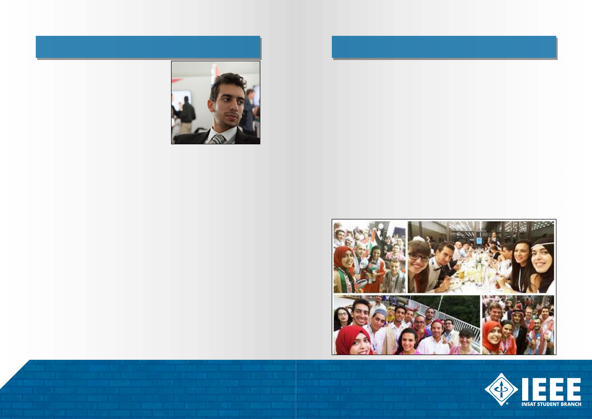

One of the benefits of being an IEEE member is that
it gives you the opportunity to achieve your goals by
providing access to an international platform of information
and giving you the chance to take your projects to an
international level.
It also enables you to attend forums and meet-ups
abroad where you can acquire new skills and make
connections with people from all over the world.
Skander Mansouri is one of IEEE members who
represented our student branch during various events
and meetings around the world from Jordan Amman to
Washington D.C. USA.
In 2015 he was invited to work on a project within IEEE
SIGHT Tunisia section along with student branch leaders
from our country. The project was named TAWASOL which
means ‘connection’ in Arabic. It aims, as he describes, ‘to connect all primary schools in Tunisia with
internet connectivity and a good quality STEM education.’ The party was allied with IEEE members
and professionals from IEEE USA and were determined to take their initiative to a worldwide level.
Their hard work finally paid off when Skander was invited to represent and expound TAWASOL
in The Global Connect Initiative Meeting organized jointly by IEEE, World Bank, Internet society and
people-Centered internet which took place during the 5th and 6th of October in Washington D.C.,
USA.
Skander described the meeting as mind-blowing. It was his first experience attending a non-
student based meet-up after attending two international meetings in Jordan and Germany. The
event left a special print in our student branch fellow as he not only was representing his project but,
also and more importantly for him, Tunisia. He felt important and appreciated during the meeting in
spite of the fact that he was the least experienced standing along professionals from international
Tech companies such as: Facebook, Mozilla, Microsoft, Google, the white house and investors from
World bank who were all interested in what he was presenting and were ready to invest in it.
The journey was far from being over, IEEE invited Skander to represent them during The Internet
Governance Forum in Guadalajara, Mexico. When asked about it he said: ‘what made me excited
was from having an IEEE booth in our university, now I’ll be representing IEEE in a worldwide event
and I’ll be part of their booth.’
Neither he nor his team members could’ve seen themselves attending a forum that big, but their
determination and belief in themselves made it possible. The project captivated the attention of
many attendees which made the team a bit concerned about what was expected from them but the
support of national and international friends stiffened their resolve and boosted their confidence.
This experience was beneficial on many levels as the team made strong connections and
international partnerships.
Working on TAWASOL did not stop, in fact, the CEO of international connector, an international
Youth Empowerment company, met the team here in Tunisia for her first ever visit to the country.
She helped them with setting the roadmap for the project.
Also, the Ministry of education and the Ministry of women and children supports the project
along with international partners in order to provide internet access to primary schools within all
regions in Tunisia. Moreover, they are making sure that the children are using Internet properly by
providing interactive workshops.
At last, Skander has a piece of advice for you: don’t limit yourself with only working on activities
within your university because IEEE is the network of networks. Aim to make connections with
people in Tunisia and outside its borders. Also, and I quote him, ‘no matter what your experience is,
no matter who you are talking to, you must always be confident of what you are capable of.
The student and young professionals congress is one of the main events in the IEEE community
in which members from Africa, Europe and the Middle East gather in order to exchange knowledge,
ideas and experiences .
As usual, the INSAT SB was present, as 11 of our members represented our student branch in the
2016 SYP held in Regensburg, Germany
“SYP experience was just different, I found myself surrounded by more than 400 IEEEIAN from
almost 54 different countries, various backgrounds, beliefs, religions, etc. Yet we shared the same
interests, we all belong to IEEE family” Says Sarra Ben Rabii about the experience.
The congress included many workshops, dedicated to developing soft and technical skills, which
were “a huge success” as described Sarra, as well as several lectures about IEEE and other topics
within the technical field
The SYP also offered the opportunity to meet new people, learn more about different cultures
and showcase yours in a very supportive and welcoming atmosphere
And I believe that Ichrak Mars put it best when she said:
“This experience was a big eye-opener. An eye-opener to different cultures, places and people...
SYP made me confident not just in speaking my first, second & third additional languages but in who
I am, what I believe in, my studies, my culture and also my country. “
And of course we cannot forget to mention that our members won the 1st best designed poster
award. “We just couldn’t go home empty handed” Said Sarra.
Finally, it seems that the only lingering thoughts in the minds of the attendees were happy
souvenirs and a new found belief that IEEE is more than a university club it’s “the biggest family in
the world “ Said Ichrak Mars.
SKANDER MANSOURI EXPERIENCE
PAGE - 28 PAGE - 29